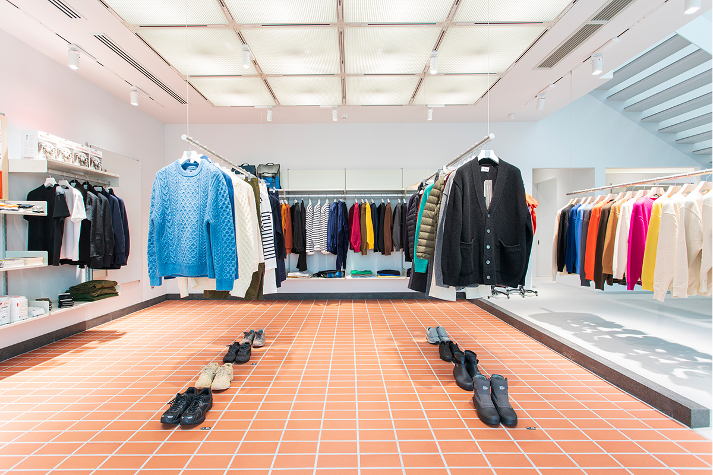
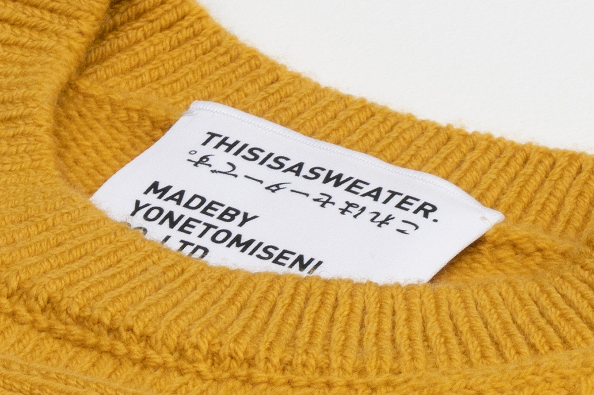
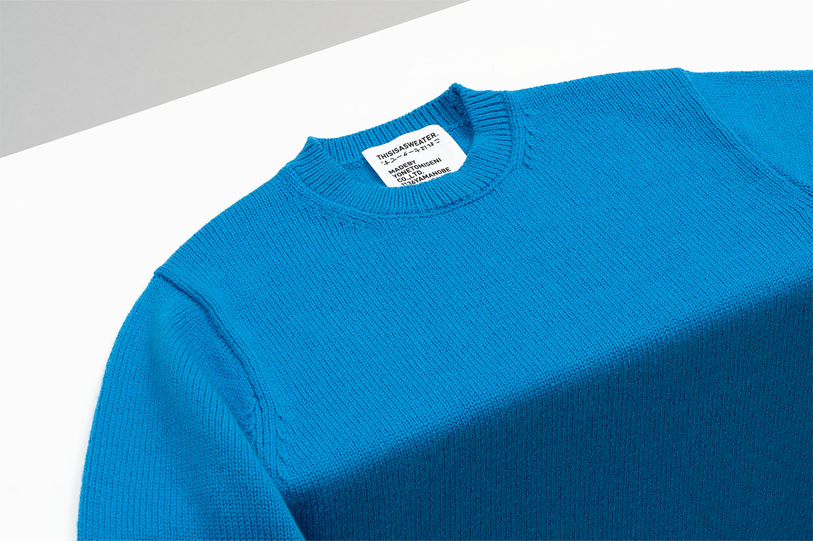
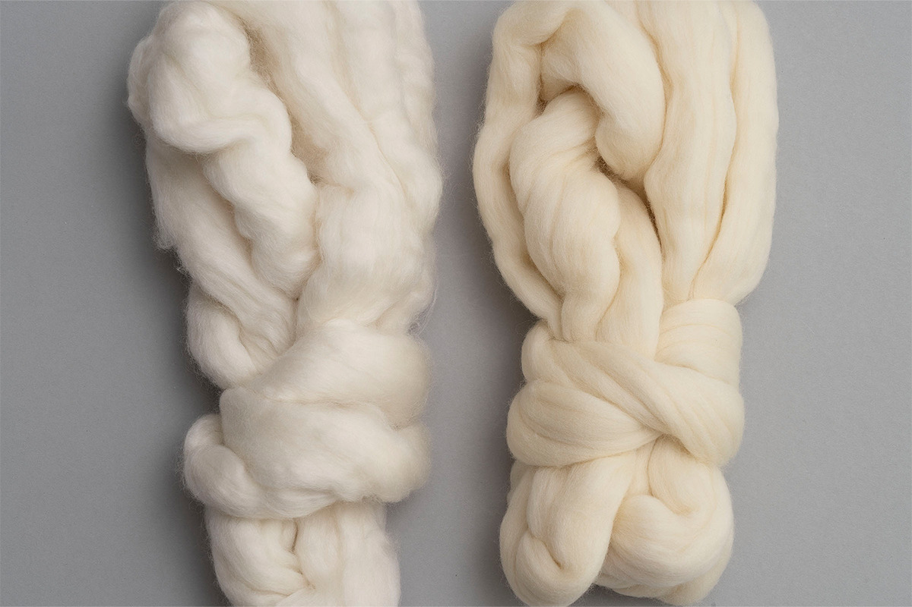
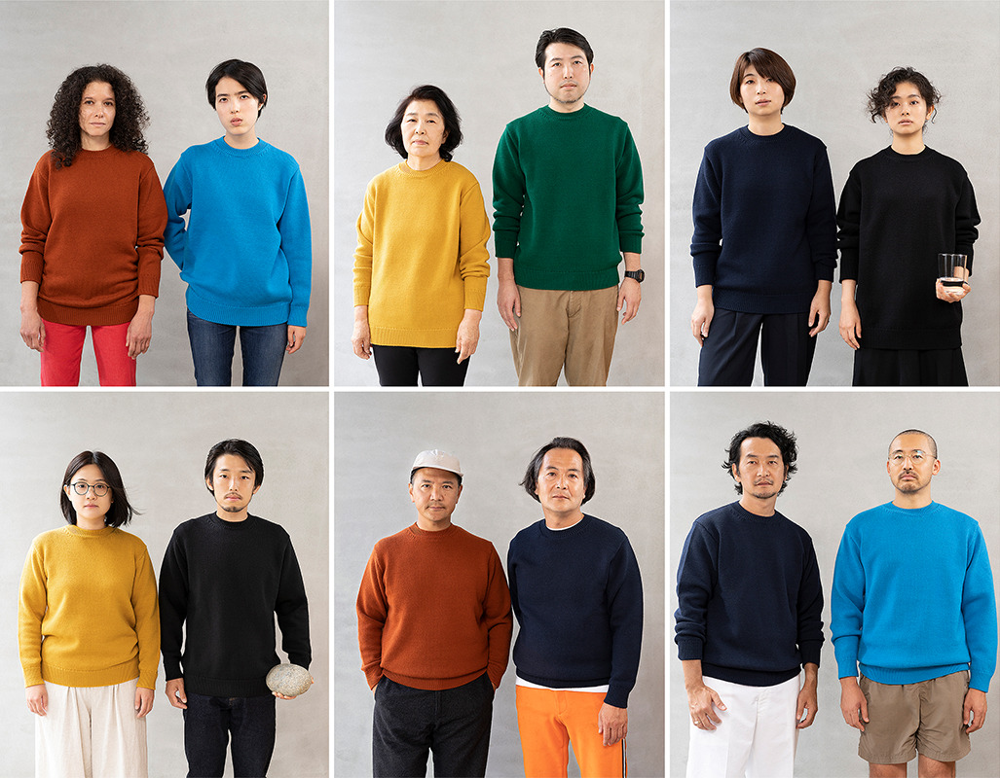
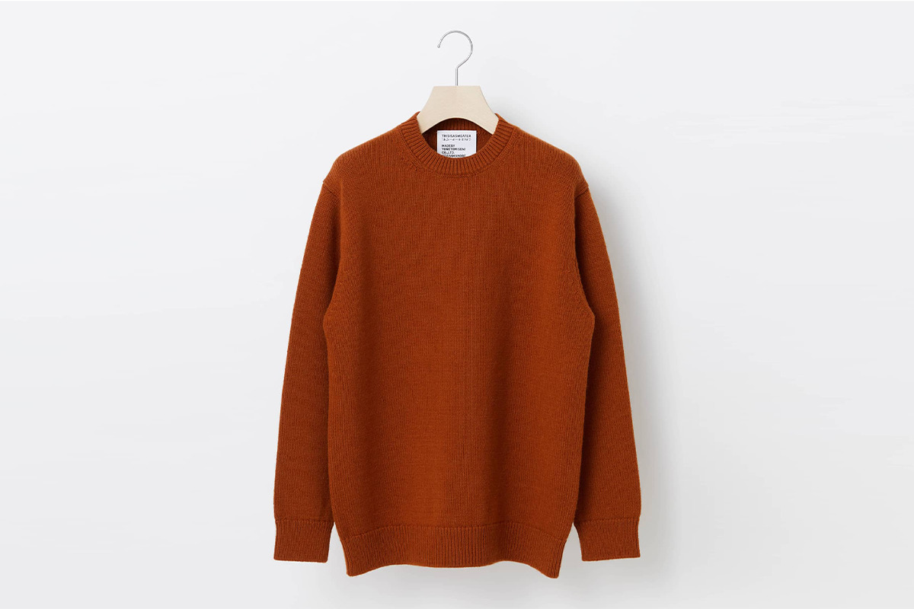
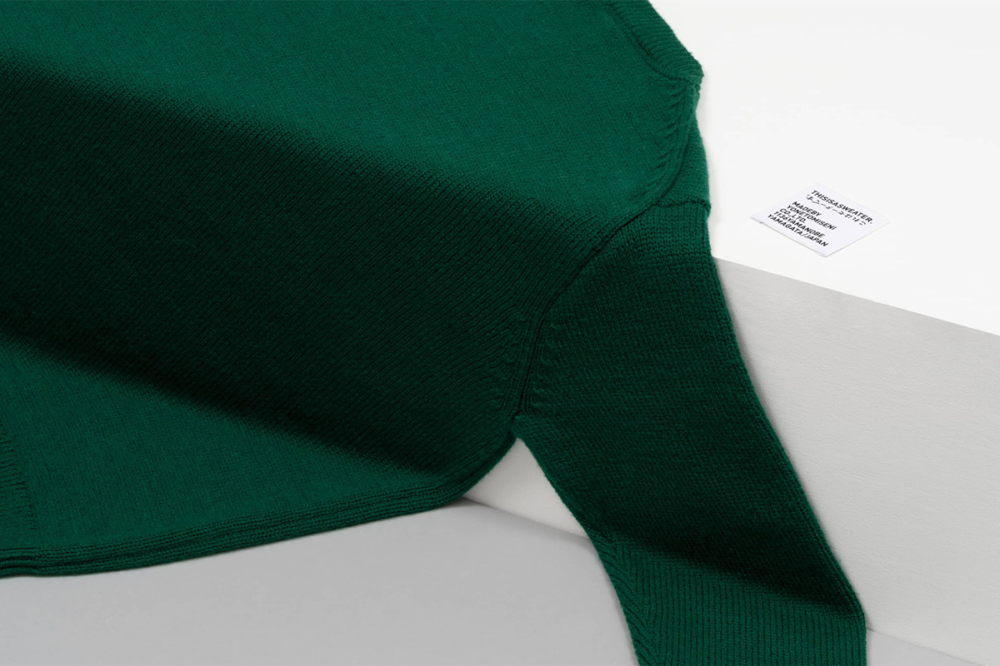
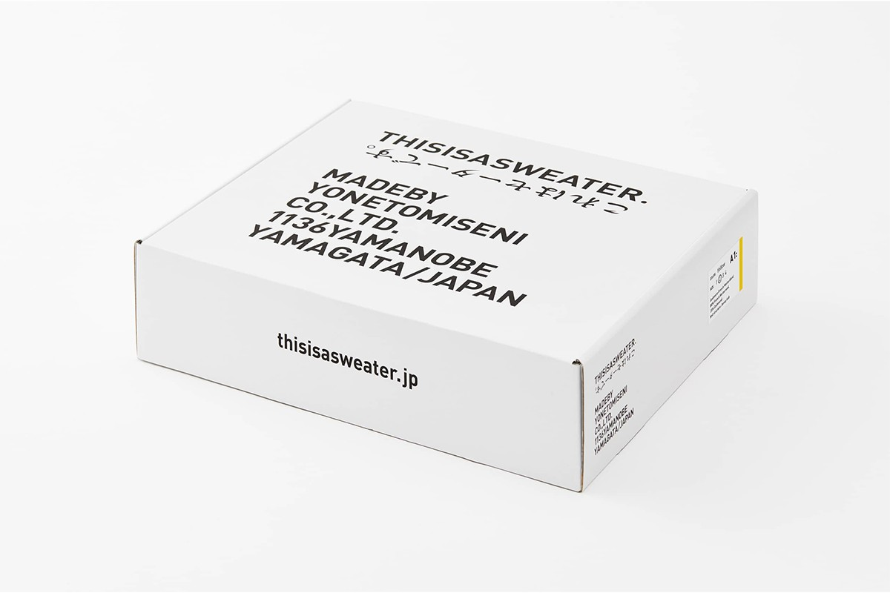
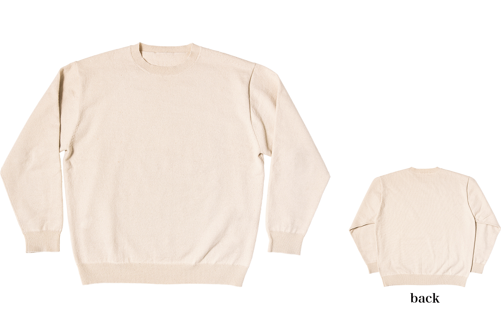
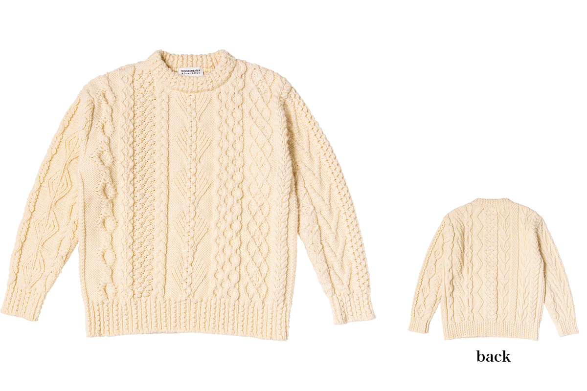

Префектура Ямагата · Яманобэ · ремесло
Yonetomi Seni в Яманобэ: трикотажная фабрика, которая заново придумывает свитер

Городок Яманобэ рядом с Ямагатой когда-то называли городом трикотажа. Yonetomi Seni, когда-то самая крупная из его фабрик, работает с 1952 года и задаёт простой вопрос: каким должен быть свитер, который носят двадцать лет.
Город
Яманобэ, город трикотажа
Яманобэ стоит в долине по соседству с городом Ямагата. Ещё в годы войны здесь поощряли разведение овец, и вокруг шерсти выросла целая промышленность: прядильные и текстильные фабрики, красильни. Городок так и называли, «город трикотажного производства». Самой крупной трикотажной фабрикой здесь была Yonetomi Seni, основанная в 1952 году.
Со временем фабрики в округе одна за другой приходили в упадок. Yonetomi Seni продолжала вязать свитера и шлифовала своё главное умение: разработку сложного трикотажного полотна. В 2010 году фабрика запустила собственный бренд COOHEM, а в 2020 году второй, THISISASWEATER. Его название переводится как «Это свитер». Задумка в том, чтобы предложить вещь, которая подходит времени, когда главной темой для местных сообществ стала устойчивость: свитер надолго, сделанный на мастерстве людей и ресурсах, которые в округе ещё сохранились.
Бренд
THISISASWEATER.: свитер как он есть

Ключевые слова бренда: инновации и сотрудничество. Фабрика берёт новые материалы и новые технологии, работает с компаниями, людьми и марками из совсем других отраслей. Цель такая: свитер, который радует в самый обычный день и который носят десять, двадцать лет, а то и передают следующему поколению. Новый, но не стареющий.

Из этой идеи вышла первая модель, «A1: A SWEATER IS ORDINARY.», то есть «Свитер это обычная вещь». Пряжу для неё сделали специально: французскую шерсть мериноса смешали с кашемиром. Вязка гладкая, 5-й класс вязки, форма простая и аккуратная. Это обычный свитер, доведённый до предела.

Меринос даёт ту самую упругость, за которую любят шерстяные свитера, а кашемир тонкий и мягкий. Два противоположных материала в одной нитке дают полотно лёгкое, пышное, как губка, и при этом гладкое на ощупь. Такого ощущения от свитера, по словам фабрики, раньше не было. В 2021 году модель стоила 26 400 иен с налогом, размеры от 0 до 4 одинаковы для мужчин и женщин, а цветов шесть: чёрный, жёлтый, коричневый, зелёный, синий и тёмно-синий.



В 2021 году свитера бренда продавались через интернет-магазин и на временных площадках в магазинах Токио и Иокогамы.

Человек
Кэн Оэ: свитер как бытовой инструмент
Свитер, который Кэн Оэ носит сам, фабрика придумала для тех, кто боится кашемира: считается, что ухаживать за ним сложно. Нитка здесь прочная, вязка плотная, поэтому свитер можно стирать руками. Его не стирают и не красят после вязки, и, как джинсы, он меняется с годами. Сначала он на ощупь почти как хлопок. Свой свитер глава компании носил две зимы почти каждый день, ворс поднялся, и кашемир начал себя показывать.
«Свитер ведь носят не ради моды, а чтобы не мёрзнуть. Это бытовой инструмент. Поэтому мы бережём историю и накопленное мастерство, но не держимся за то, каким свитер „должен быть“, а обновляем взгляд вместе со временем»
Кэн Оэ, глава Yonetomi Seni
Так сделан и свитер, который советуют в магазине. За образец взяли свитер лучшего вязальщика с Аранских островов в Ирландии, но пряжу смешали свою, и он не колется, даже если надеть его прямо на футболку с коротким рукавом.


Вещи для себя он выбирает по тому же принципу. Он уважает историю и ремесло, но не тоскует по старому: его привлекает то, что переосмыслено для сегодняшнего дня. Вещь на всю жизнь, по его словам, нельзя купить просто потому, что «вроде красиво». Она не должна быть модой на один сезон ни по качеству, ни по дизайну, и важно разделять мысли и историю людей, которые её сделали.
«Японцы умеют изучить корни вещи и придумать что-то своё. Мы обращаем внимание на мелочи, и в одежной отрасли нигде, кроме Японии, нет фабрик, которые так тщательно выполняют самые тонкие требования. И делают это, не крича о себе. Само это отношение к ручной работе, по-моему, красиво»
Кэн Оэ, глава Yonetomi Seni
Магазин
Yonetomi STORE: купить у тех, кто вязал
Лучший способ узнать историю вещи, считает Кэн Оэ, это приехать туда, где её делают, посмотреть, потрогать, попробовать. У фабрики есть интернет-магазин, и ассортимент там тот же, что в магазине. Но в магазине Yonetomi STORE покупателей встречают работники фабрики, а саму фабрику можно посмотреть на экскурсии. В 2026 году экскурсии проводились раз в месяц, в третью субботу, по предварительной записи по электронной почте, подробности на сайте магазина.
«Вещь, купленная после разговора с теми, кто её сделал, в воздухе мастерской, и вещь, купленная на экране, это совсем разные вещи. И радость от покупки разная, и привязанность, которая растёт, пока её носишь»
Кэн Оэ, глава Yonetomi Seni
Yonetomi STORE
- Адрес
- префектура Ямагата, уезд Хигаси-Мураяма, Яманобэ, Яманобэ, 1136
- Телефон
- +81 23-664-8166
- Часы работы
- среда–суббота, а также 2-е и 4-е воскресенье месяца, 12:00–19:00
- Выходные
- понедельник, вторник, 1-е, 3-е и 5-е воскресенье месяца
- Сайт
- yonetomistore.jp
Фото: Кохэй Омати, Акио Накамура, Кадзуя Хаяси, Хироси Мидзусаки.